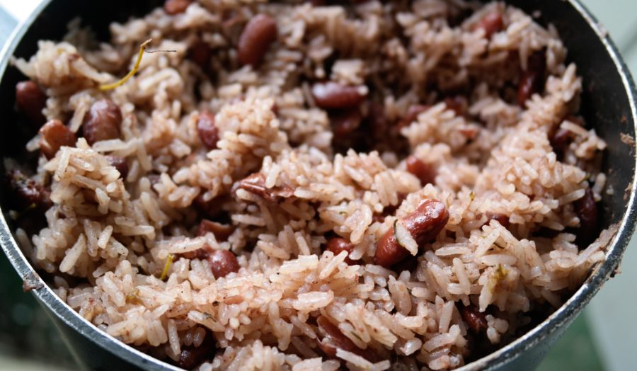

Jamaican Rice and Peas

Exploding in flavour, this rice dish is a Sunday dinner staple in Jamaica.
This versatile dish can be served with curry chicken, jerk chicken or an abundance of other proteins.
Ingredients
- 1 cup or 180g dried kidney beans/canned kidney beans.
- ½ medium yellow onion, sliced
- 2-3 green onions, diced
- 2 bay leaves
- 1 tablespoon or 8.62g minced garlic, about 3-4 cloves
- 3-4 sprigs thyme, minced
- 2 tbsp salt
- 7 pimento seeds
- 3 cups water
- 1 can unsweetened coconut milk
- 2 cups rice
- 1 whole scotch bonnet pepper
Steps
- Add beans to a medium pot or bowl and let it soak overnight for even cooking and to save time.
- When ready to cook, rinse and drain beans making sure it is free of any objects.
- Add soaked beans to a large pot together with onions & green onions, minced garlic, bay leaves, thyme, salt, allspice, and then followed by water.
- Cook covered on medium-high heat until beans are tender, about 50-60 minutes or more.
- Pour in coconut milk, rice, and scotch bonnet pepper.
- Bring the pot to a boil, reduce to medium-low, and simmer, covered, until liquid is absorbed and rice is tender, about 18 minutes or more. If rice is drying up add about a little bit of water, as needed.
- Remove pot from the oven and add butter or coconut oil, if desired, discard bay leaves. Fluff thoroughly with a fork.
- Garnish with green onions and serve.
Go back to homepage...